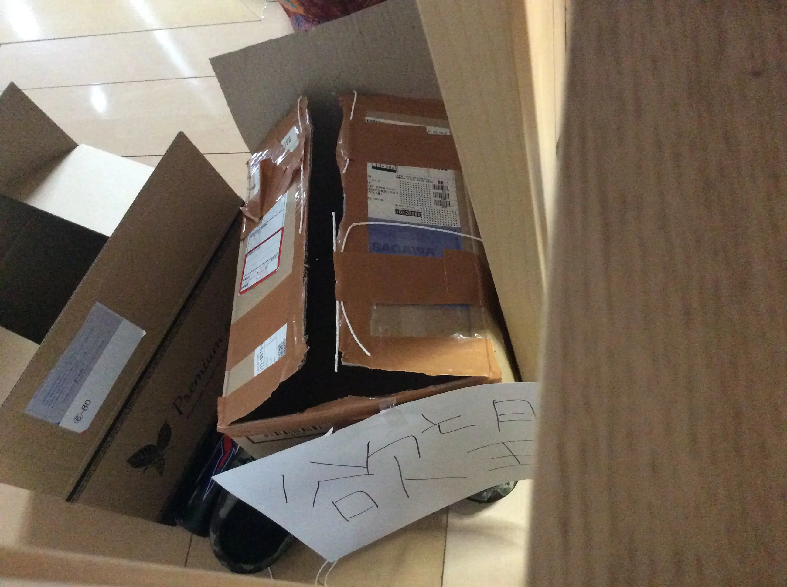

三月三日
元々インターナショナルスクールを志望校にしていたが、二次選考で補欠合格っていう微妙な結果になり、公立高校を受けないといけない羽目になって、勉強めちゃしないといけなくなり、パソコンを段ボールの中に監禁して、二月二日から三月三日の受験まで集中して勉強することにした。そして三月三日なう。終わった〜

ちなみにこれが破壊済みの監禁段ボール。
監禁すると開発欲が爆発してすんげープロジェクト案が浮かんでくる。僕はそうだった。めちゃくちゃいい案が浮かんできた。実際に制作チームをアイデアが脳から消え去る前に組織しといた。マジで高校卒業する前にえぐいのできる予感。
こんなテンションで記事を書いているけど実際はめちゃくちゃ精神安定していない。
なんていうか、最後の方は同じ学年で受験に余裕がある人と一緒にいるだけで涙出てくるくらいだった。
受験いやなんか僕、とかっておもちゃって、でもそんなことはなくて、頑張りたいし、でも怖いし。
僕はいつも浅はか極まりない人生を送り続けていたが、それは友達と一緒に過ごす時間を楽しむためだ。でも禁（開発）欲すると家族以外の関わりなくなる。学校では平常心保てるが、家で一人の時、自分って何をモチベーションに生きてるんだろうとかって考えるようになって。
もうなんか色々めちゃくちゃ。
浅はかな人生を辞めたい。が、辞められん。
こんなこと言ってても学校ではいつも通りの僕で入れると思う。こう、TPOとか雰囲気とかに左右されて性格がコロコロ変わる僕がほんと憎い。
でした。この休日で色々整理したいと思っている。